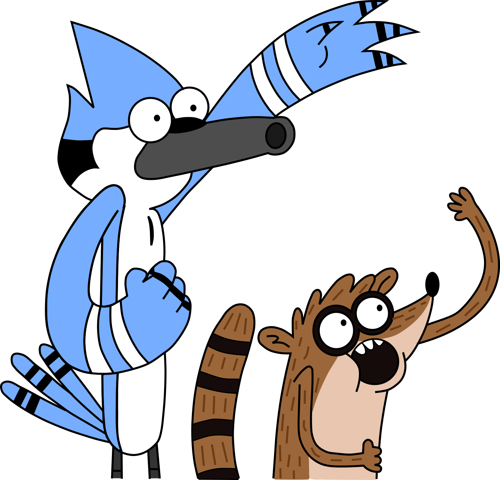
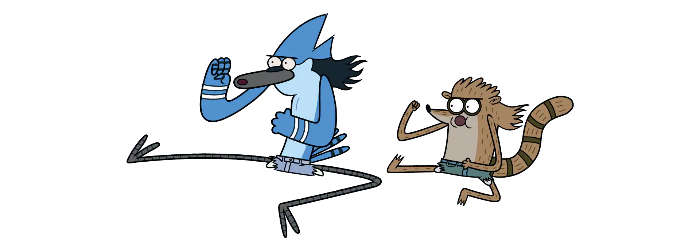

Mordecai e Rigby
Conheça algumas curiosidades dessas duas figuras de apenas um show.
MORDECAI
- Ele é um jovem gaio azul de 23 anos;
- É o melhor amigo de Rigby;
- Mordecai é bem-educado e descontraído;
- Como Rigby, ele não usa roupas, joga videogame, canta karaoke, e bebe grandes quantidades de café e refrigerante;
- Mostra muito mais paciência, força, responsabilidade e inteligência do que Rigby;
- O defeito mais óbvio de Mordecai é a sua incapacidade de lidar com seus interesses amorosos;
- Mordecai é um especialista em jogos de Video-Game;
- Mordecai mostrou em várias ocasiões que ele pode cantar muito bem;
- Adora uma festa;
- É um dançarino experiente;
RIGBY
- É um guaxinim brincalhão, preguiçoso e extremamente problemático;
- Ele também tem 23 anos;
- É o melhor amigo de Mordecai;
- Rigby é extremamente ciumento com o irmão em muitos aspectos;
- Em "Tá na Hora" e em "Olá Senhor", é mostrado que ele é um cara durão e bom em fazer trocadilhos;
- Rigby não possui um diploma do ensino médio até o final da sétima temporada onde se forma no ensino médio no colégio onde estudou;
- Ele é péssimo em video-games;
- Foi agredido seriamente pelo Martelo em "Ódio Contra a TV";
- Rigby quase foi sugado pelo monstro do pedra,papel ou tesoura no Primeiro dia;
- Rigby morreu 3 vezes em Apenas um Show;
